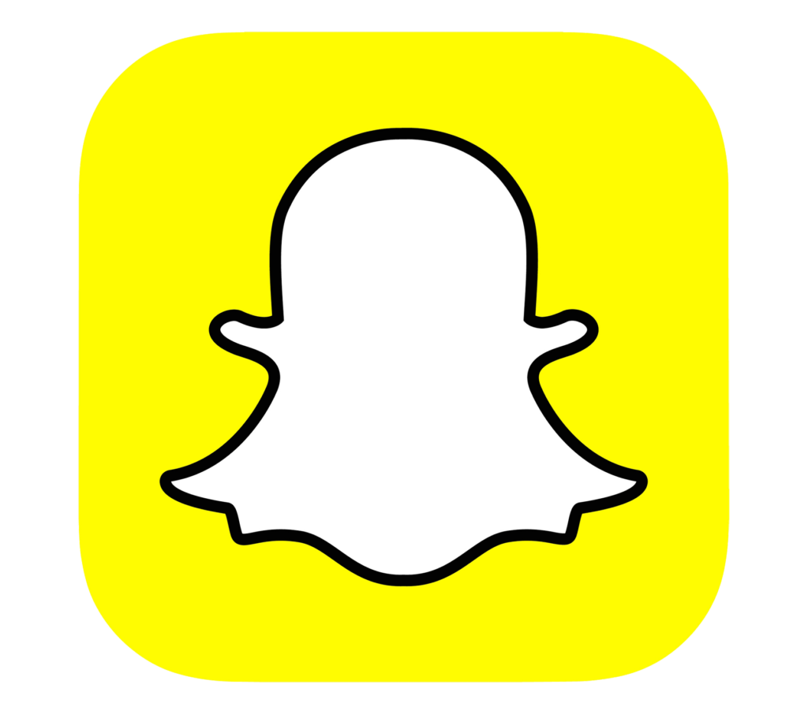
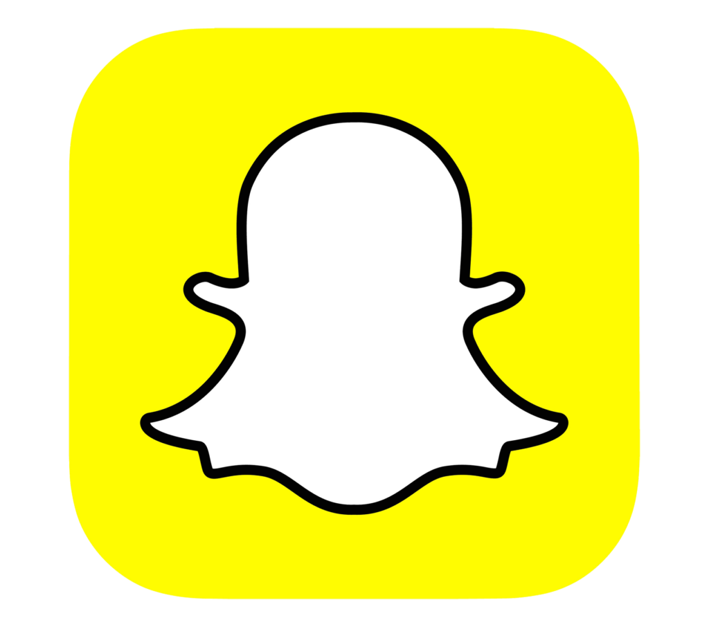
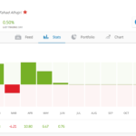
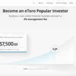
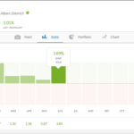
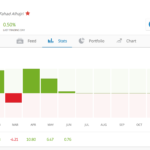
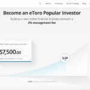
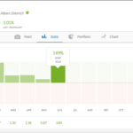

Le Copy Trading est en gros un moyen de permettre aux traders amateurs, ou aux débutants complets, de copier automatiquement les trades de traders plus expérimentés. Aussi parfois appelé « trading miroir » ou « trading automatique », il te permet de parcourir les profils de traders expérimentés et de consulter leurs statistiques de trading. Quand tu en trouves un qui te plaît, tu peux configurer ton compte pour copier automatiquement tous ses futurs trades.
Comment le Copy Trading s'est développé
Revenons un peu en arrière. Par le passé, si tu voulais investir, tu devais trouver un « courtier » à qui tu payais une commission pour effectuer des trades en ton nom. Les trades pouvaient être l'achat ou la vente d'actions de sociétés, ou toute une gamme d'autres investissements.

Tu pouvais soit dire au courtier quoi acheter, suivre ses conseils d'investissement, soit simplement le laisser trader pour toi. C'est comme ça que les choses ont fonctionné pendant longtemps. Le trading était un monde fermé à bien des égards, et les courtiers en étaient les gardiens. Le reste d'entre nous regardait de loin pendant qu'une petite élite de la société semblait gagner beaucoup d'argent sur les marchés financiers.
Les salles de marché et les graphiques incompréhensibles
Les autres traders qu'on voyait étaient tous occupés à se crier dessus dans des salles bizarres et à fixer des chiffres sur des tableaux. Trading Places était un super film, mais ça ne nous a vraiment pas aidés à nous sentir à notre place là-dedans. Au fil du temps, on a vu beaucoup d'ordinateurs et des graphiques incompréhensibles. Les choses avaient changé, mais elles n'étaient pas devenues plus simples. Pourquoi ce type a 6 écrans d'ordinateur !?
L'évolution de la technologie du trading
Des anciennes salles de marché aux bureaux vitrés et élégants, le saut était considérable. Les ordinateurs avaient gagné, et tout est passé au numérique. Internet est apparu, et les salles de marché étaient en déclin. Les cris et les hurlements dans les grandes fosses de trading de New York, Londres et Chicago ont été remplacés par des ordinateurs traitant l'information à une vitesse inimaginable, et des traders du monde entier collés à leurs écrans. Le trading restait du trading, et les gens gagnaient et perdaient des fortunes sur les marchés financiers.
L'arrivée des réseaux sociaux
Dans un développement sans rapport direct, des connexions Internet plus rapides et de meilleurs sites web ont facilité l'essor des réseaux sociaux, et il n'a pas fallu longtemps pour que tout le monde s'y mette. En une décennie, les réseaux sociaux sont devenus partie intégrante de la vie quotidienne. On sait ce qu'est un « profil », comment « suivre » quelqu'un ou « commenter » quelque chose — on comprend comment construire des relations numériques et faire partie d'un grand espace communautaire en ligne.
 

La naissance du trading social
Dès que tout le monde s'est habitué aux réseaux sociaux, quelqu'un a eu la brillante idée de combiner les fonctionnalités de nos sites sociaux préférés avec le trading classique, permettant à tout le monde de rejoindre la communauté du trading. Ce n'était jamais possible avant — la technologie n'existait tout simplement pas. Et maintenant, le monde fermé du trading s'est ouvert à tous, et les « investisseurs particuliers » (par opposition aux investisseurs professionnels) ont commencé à s'intéresser à cet accès soudain au terrain de jeu des riches.
L'arrivée du Copy Trading
Le copy trading va encore plus loin. Alors que des investisseurs non professionnels affluaient sur le marché, quelqu'un a eu la brillante idée de permettre aux nouveaux investisseurs de « copier » les trades des investisseurs plus expérimentés.
 





Ils ont donné à tout le monde la possibilité de voir les statistiques des autres. Ils ont simplifié les graphiques, rendu possible de voir le niveau de risque du trading de chacun, combien ils avaient gagné depuis qu'ils avaient commencé à trader sur le site — mois par mois. On pouvait voir ce que tout le monde tradait, et lire leurs publications expliquant pourquoi ils tradaient de cette façon.
Rendre le tout accessible
En résumé, ils ont rendu facile de « faire son shopping » pour trouver un trader talentueux. Et quand tu en trouves un, ils ont mis un gros bouton « Copier » bien visible, pour que tu puisses facilement configurer ton compte pour copier automatiquement tous les futurs trades de cette personne.
Quand il achète, tu achètes. Quand il vend, tu vends. Entièrement automatisé — tu n'as rien à faire. Tu peux vaquer à tes occupations quotidiennes pendant que quelqu'un trade pour toi. Tu choisis le montant avec lequel tu veux le copier, et c'est ce montant qui sera utilisé pour ses trades.
Si tu perds un certain montant (celui que tu définis), le système arrête automatiquement de copier cette personne pour toi et l'argent restant retourne dans ton compte de trading. Et il n'y a aucun frais pour copier quelqu'un — le site lui donne des incitations proportionnelles au nombre de personnes qui le copient.
Le Copy Trading fonctionne-t-il vraiment ?
Sur eToro, tu paies les frais de spread habituels pour chaque trade, et il y a d'autres frais à connaître. Les personnes que tu copies s'appellent des « Popular Investors ». Si tu penses être assez bon en trading et que tu veux tenter l'expérience, tu peux t'inscrire à leur programme Popular Investor.
Ça reste du trading, donc les actifs peuvent aussi bien monter que baisser en valeur. Apprendre à choisir les bons investisseurs prend un peu de temps, mais toutes leurs statistiques et leur historique sont visibles en détail.